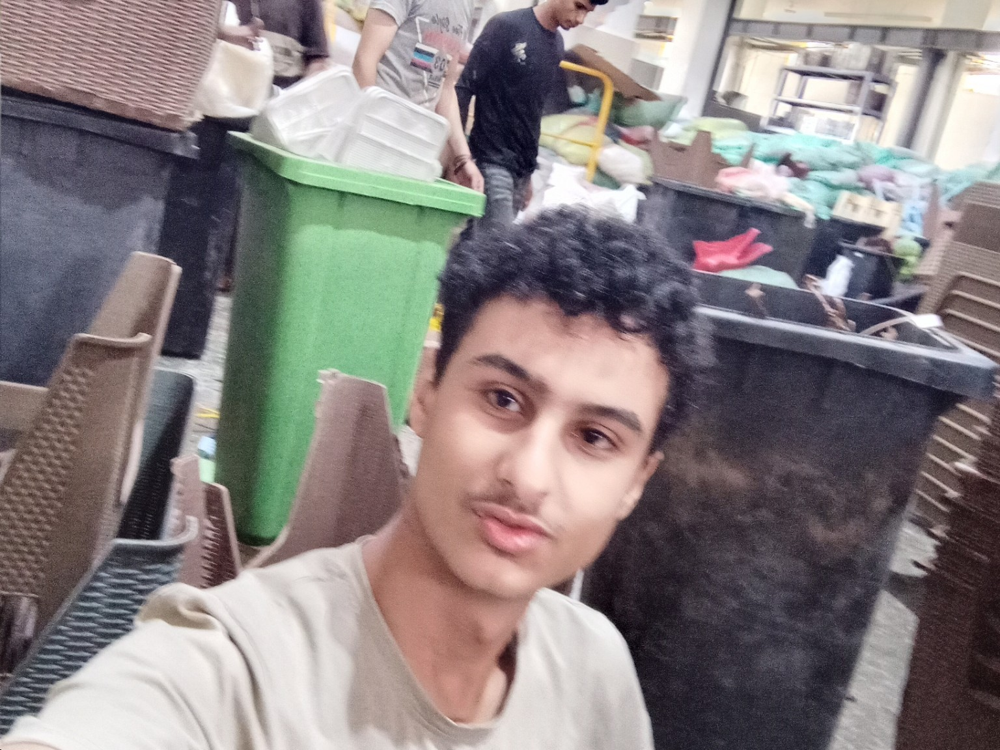
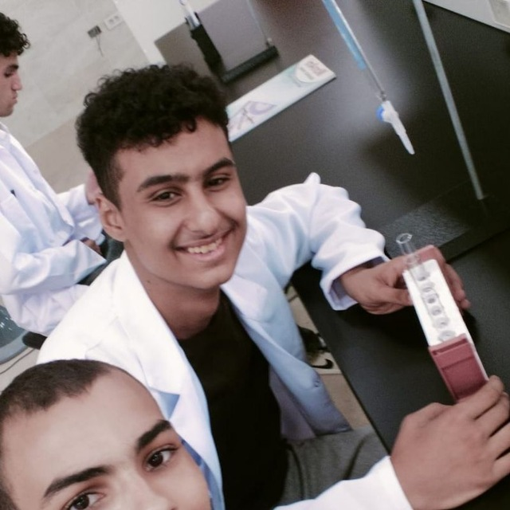
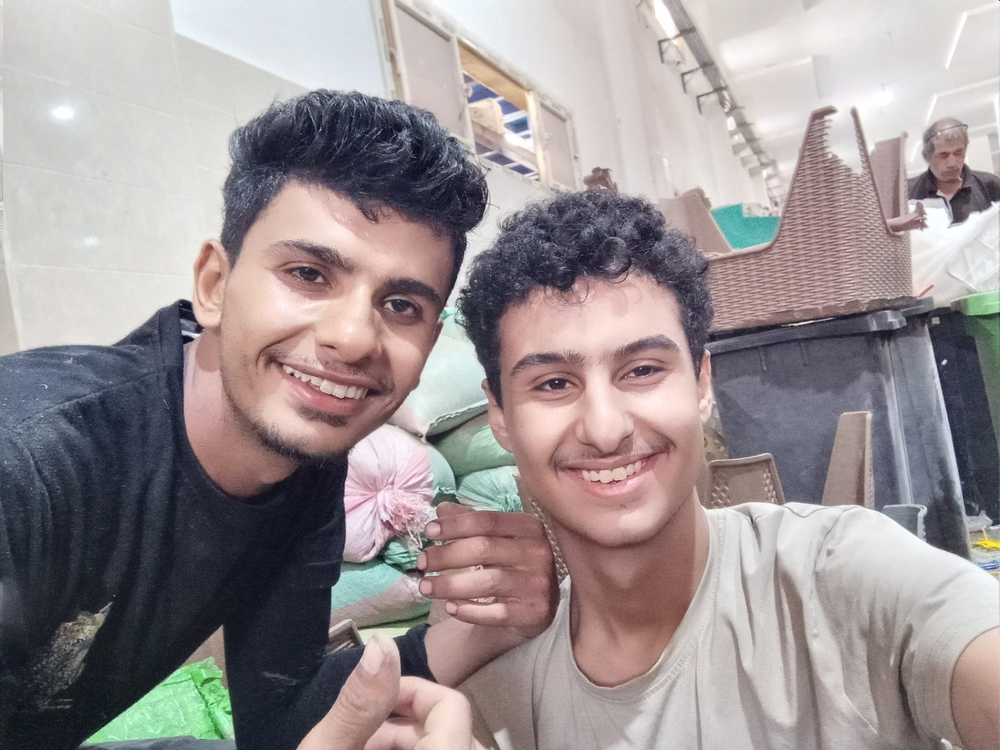

مش كل الحكايات بتبدأ بحدث كبير، ومش كل الناس اللي بتبان عادية من بره بتكون حياتها عادية من جوه.
أنا كريم.
ولو سألتني أعرّف نفسي في كلمتين، غالبًا مش هعرف. مش عشان معنديش إجابة، لكن عشان أنا نفسي قضيت سنين بحاول أفهم أنا مين بالظبط.
من وأنا صغير، كان عندي عالم تاني جوا دماغي. عالم ممكن أقعد فيه ساعات طويلة، أفكر وأتخيل وأحلل مواقف حصلت، ومواقف محصلتش، واحتمالات عمرها ما هتحصل أصلًا.
كنت بحب أفهم الحاجات، مش مجرد أعرفها. ودي كانت ميزة وعيب في نفس الوقت.
الميزة إني مكنتش بقتنع بسهولة بالإجابة السطحية. والعيب إني ساعات كنت بفضل أدور على الإجابة المثالية لحد ما الوقت يعدّي، والفرصة تضيع، وأنا لسه بفكر.
كنت ممكن أحلل موقف صغير من عشر زوايا، وأتخيل نهايات مختلفة لنفس الحكاية، وأرجع أسأل نفسي: طب لو كنت اتصرفت بشكل مختلف؟ يا ترى النتيجة كانت هتتغير؟
ومع الوقت، اكتشفت إن العقل اللي ممكن يساعدك تفهم الدنيا، ممكن كمان يحبسك جواها.
الولد اللي كان عنده أحلام أكبر من سنه
كان عندي طموح، وكنت بحب أحس إن ليا قيمة، وإن فيه حاجة أقدر أعملها بشكل مختلف عن غيري.
الدراسة كانت جزء من صورتي عن نفسي. كنت متعود إني أكون من المتفوقين، ومن الناس اللي بيتوقع منها اللي حواليها حاجات كبيرة.
بس محدش بيحكيلك إنك ممكن تبقى شاطر، وعندك قدرات، وبرضه تقع.
وإنك ممكن تكون فاهم أنت المفروض تعمل إيه، لكنك متعملوش.
ومحدش بيقولك إن فيه فرق كبير بين إنك تكون قادر على حاجة، وإنك تعرف تلتزم بيها كل يوم.
في فترات من حياتي، كنت بغرق في التفكير والخيال والتأجيل. أسيب حاجات تتراكم، وأفضل أقول لنفسي إن لسه فيه وقت، وإنّي لما أبدأ بجد هقدر أعوض.
لحد ما الوقت اللي كنت فاكره موجود بدأ يخلص.
الثانوية العامة… السنة اللي غيّرت حاجات كتير
الثانوية العامة في مصر مش مجرد سنة دراسية. على الأقل بالنسبة لناس كتير، هي سنة بيتحط فيها مستقبلك كله تقريبًا على ترابيزة واحدة، وبيتقالك: اختار صح، واثبت نفسك، ومترجعش تقول محدش قالك.
بالنسبة لي، كانت أكتر من امتحانات ودرجات.
كانت صراع بين الصورة اللي رسمتها لنفسي، والواقع اللي بدأت أشوفه.
كان عندي تصور عن النتيجة اللي ممكن أوصل لها. وكنت عارف إني كنت أقدر أعمل أحسن من اللي حصل.
لكن الحقيقة مش دايمًا بتتغير لمجرد إنك عارف إنك كنت تقدر تعمل أحسن.
في الكيمياء، حصل خطأ في ترتيب تظليل الإجابات في ورقة البابل شيت، وده أثّر على النتيجة. ودي من الحاجات اللي فضلت أرجع أفكر فيها: إزاي خطأ واحد ممكن يغيّر شكل نتيجة سنة كاملة؟
جبت حوالي 87.2%.
رقم ممكن شخص يشوفه كويس، وشخص تاني يشوفه قليل. لكن الأرقام مش بتوجع الناس لوحدها؛ اللي بيوجع هو الفرق بين اللي حصل، واللي كنت متخيل إنك هتوصله.
أنا مكنتش زعلان من الرقم بس. كنت زعلان من إحساسي إني قصّرت في حق نفسي، وإن فيه نسخة مني كان ممكن توصل لمكان مختلف لو كانت تصرفت بشكل مختلف.
وساعتها اتعلمت درس صعب: مش كل خسارة سببها إنك مش قادر. ساعات بتكون قادر فعلًا، لكنك مش بتعرف تدير نفسك وقت ما يكون الموضوع مهم.
وده يمكن أصعب نوع من الخسارة؛ لأنك مش بتقدر تلوم الظروف كلها، ولا بتقدر تسامح نفسك بسهولة.
طب الأسنان… بداية مش شبه الصورة اللي في خيالي
بعد الثانوية، دخلت طب الأسنان في جامعة الإسماعيلية الجديدة الأهلية.
بالنسبة لي، كان فيه جانب من الراحة. أخيرًا بقيت في المجال اللي كنت عايزه، وبدأت مرحلة جديدة بدل ما أفضل واقف عند نتيجة الثانوية.
لكن الفرحة مكنتش نهاية المشكلة.
أنا كنت داخل الكلية وعندي طموح كبير. كنت عايز أكون متفوق، وأجيب تقدير عالي، وأثبت لنفسي قبل أي حد إن اللي حصل في الثانوية مش آخر حدودي.
وبعدين بدأت الدراسة الحقيقية.
مواد كتير، ومصطلحات إنجليزي، وتشريح، وبيولوجي، وكيمياء، وميكروبيولوجي، وفيزياء حيوية، وتشريح أسنان.
وفجأة، بقيت قدام كمية معلومات أكبر من الوقت اللي كنت متخيل إني محتاجه.
كنت بقعد على السلايد ساعات. أحيانًا أكون فاهم الفكرة كويس، لكن أفضل أحاول أحفظ كل كلمة، وكل تفصيلة، وكل صياغة، كأن الامتحان هيحاسبني على كل حرف.
أخلص جزء صغير وأحس إني لسه مش جاهز. أرجع أراجعه، وأكتشف إن باقي المنهج بيتراكم.
وكل يوم يعدّي كان بيخليني أبص لورا وأشوف كمية اللي متعملش، بدل ما أبص لقدامي وأشوف اللي لسه ممكن ألحقه.
المشكلة مكنتش إني مش عايز أنجح. بالعكس، كنت عايز أنجح بدرجة عالية جدًا.
لكن أحيانًا الطموح، لما يتحول لشرط مستحيل، بيبقى عائق بدل ما يكون دافع.
أنا كنت بحاول أتقن كل حاجة من أول مرة، في وقت كان المفروض أتعلم فيه إزاي أعدّي على المعلومات، وأرجع لها، وأختبر نفسي فيها.
وبين الرغبة في الكمال والخوف من التأخير، كنت بخسر الاتنين.
ولأول مرة، بدأت أسأل نفسي سؤال مقلق:
هو أنا فعلًا عندي مشكلة في قدراتي، ولا عندي مشكلة في الطريقة اللي بستخدم بيها قدراتي؟
ومكنتش لسه لاقي إجابة كاملة.

دماغ مش بتعرف تسكت
فيه حاجة عني صعب أشرحها لحد مش بيعيشها.
ممكن أكون قاعد في مكان هادي، ومفيش حاجة بتحصل، لكن جوا دماغي فيه عشرات الحوارات شغالة في نفس الوقت.
أراجع موقف قديم. أحلل كلمة اتقالت. أفكر في المستقبل. أتخيل مشروع جديد. أبدأ أقارن بين اختيارين، وبعد شوية ألاقي نفسي بقارن بين عشرة.
وبعدين أرجع لنقطة البداية.
كنت بحب التحليل، لكني بدأت ألاحظ إن التحليل مش دايمًا بيوصلني لقرار. ساعات بيخليني أشوف احتمالات كتير لدرجة إني مببقاش قادر أختار احتمال واحد وأتحرك.
وفيه فرق بين التفكير اللي بيقربك من الحقيقة، والتفكير اللي بيفضل يعيد نفس الأسئلة من غير ما يضيف معلومة جديدة.
الفرق ده مكنتش بعرف أحدده بسهولة.
كنت بتأثر بالأحداث، وأفضل شايلها جوايا فترة طويلة. ساعات موقف يخلص بالنسبة للطرف التاني، لكنه يفضل مفتوح عندي، كأني مستني منه نهاية أو تفسير.
ويمكن عشان كده كنت بحاول أفهم نفسي باستمرار. مش عشان كنت شايف نفسي لغز عظيم، لكن عشان كنت حاسس إن فيه مسافة بين الشخص اللي عايز أكونه، والشخص اللي بعرف أكونه في الواقع.
حكايات انتهت… بس مخلصتش جوايا
مش كل الخسارات بتكون خسارة شخص موجود في حياتك.
فيه خسارات بتكون لفكرة، أو احتمال، أو مستقبل كنت متخيله.
في حياتي، كان فيه مشاعر متبادلة أو كنت أعتقد إنها متبادلة، ومواقف فضلت محتاجة تفسير. كان فيه كلام اتقال بقوة، وردود متأخرة، وصمت، وإشارات حاولت أفهم معناها.
وفيه لحظات فضلت أرجع لها بعد شهور، وأسأل نفسي: هي كانت حاسة بإيه؟ هل فهمتني غلط؟ هل كنت أنا اللي فهمت الموقف غلط؟ وهل كان ممكن الحكاية دي تنتهي بشكل مختلف؟
مش هقول إني كنت دايمًا فاهم الطرف التاني، لأن الحقيقة إني مكنتش أعرف كل اللي جواه.
ودي نقطة اتعلمت إن لازم أفرق فيها بين اللي حصل فعلًا، واللي أنا استنتجته، واللي كنت أتمنى إنه يكون حقيقي.
لكن حتى لما بتفهم إنك مش قادر تعرف الإجابة، ده مش معناه إن مشاعرك بتختفي فورًا.
فيه حكايات مبتنتهيش بوضوح. لا فيه وداع كامل، ولا تفسير يشبعك، ولا لحظة واحدة تقدر تقول بعدها إنك بقيت شخص تاني.
بتفضل معاك أجزاء منها، تظهر في أوقات غريبة، وتخليك تسأل نفسك إذا كنت فعلًا تجاوزتها، ولا بس اتعلمت تعيش من غير ما تتكلم عنها.
ومع الوقت، بدأت أفهم إن مش كل سؤال لازم تلاقي له إجابة، وإن مش كل احتمال يستحق إنك تعيش جواه.
لكن الفهم حاجة، وإنك تقدر تطبقه على نفسك حاجة تانية خالص.
الوحدة مش دايمًا إن مفيش حد حواليك
في مراحل من حياتي، لقيت نفسي بعيد عن ناس كنت فاكر إنهم هيفضلوا موجودين.
صداقات انتهت، وعلاقات اتغيرت، وناس كل واحد منهم كمل طريقه.
الحياة بعد الثانوية تحديدًا كانت غريبة. كأن فصل كامل اتقفل فجأة، من غير ما كل الناس تاخد فرصة تودّع بعضها بشكل حقيقي.
كل واحد راح مكان، وبدأ حياة جديدة، وبقى عنده مسؤوليات وروتين مختلف.
واللي كان زمان جزءًا من يومك، ممكن فجأة يبقى مجرد اسم بتفتكره من وقت للتاني.
اكتشفت إن الوحدة مش شرط تكون إن مفيش حد في حياتك. ممكن يكون حواليك ناس، لكن مفيش حد عارف إيه اللي بيدور جواك فعلًا.
وممكن تكون أنت نفسك مش عارف تشرح لهم.
أنا بطبيعتي بحب الهدوء، وبحب أقعد مع نفسي. لكن فيه فرق بين إنك تختار الوحدة عشان ترتاح، وإنك تلاقي نفسك فيها لأن الحاجات اللي كانت بتربطك بالناس اتغيرت.
وساعات كنت بخلط بين الاتنين.
أنا مش عايز أكون دكتور وبس
رغم كل ده، كان فيه جانب تاني في حياتي مكنش بيسكت.
جانب عايز يبني حاجة.
كنت بفكر في البرمجة والمواقع، وفي إنشاء مشروعات ممكن تكبر مع الوقت، وفي طرق أقدر بيها أعمل دخل مستقل.
فكرة إنك تبني موقع من الصفر، وتخلي صفحات بتاعتك توصل للناس، وتفكر في الاستضافة ومحركات البحث والتوسع، كانت بتشدني.
مش عشان الموضوع سهل، لكن عشان فيه مساحة إنك تبدأ من فكرة صغيرة وتحاول تحولها لحاجة حقيقية.
وفي نفس الوقت، كان عندي حلم إني أعمل محتوى على يوتيوب.
مكنتش عايز مجرد قناة بنزل عليها فيديوهات وخلاص. كنت عايز أقدم حكايات ووثائقيات، وأناقش موضوعات، وأحكي بطريقة مصرية فيها تحليل وهزار ومونتاج، وأبني أسلوب يبقى معروف بيا.
كنت عايز أجمع بين حاجات مختلفة: طب الأسنان، والبرمجة، وصناعة المحتوى، والاستقلال المادي.
يمكن حد يشوف ده تشتت. وممكن يكون فيه تشتت فعلًا.
لكن بالنسبة لي، كان فيه خيط مشترك بين الحاجات دي كلها: إني مش عايز أفضل مستني حد يحددلي أنا هعمل إيه في حياتي.
كنت عايز أكون قادر أبني حاجة بإيدي، حتى لو بدأت صغيرة، وحتى لو احتجت سنين عشان أوصل لنتيجة تستحق.
المشكلة إن وجود أحلام كتير مش معناه إنك هتحققها كلها. الأحلام محتاجة وقت، وترتيب أولويات، وقدرة على إنك تقول لأ لحاجات بتحبها عشان تقدر تكمّل في حاجة واحدة.
وده درس لسه بتعلمه.

بوست واحد وصل لناس أكتر مما توقعت
في مرحلة من المراحل، كتبت منشورًا عن نتيجة الثانوية العامة ودخولي طب الأسنان.
كان منشورًا شخصيًا، بيتكلم عن النتيجة وعن إن النهاية مش بالضرورة تكون نهاية الطريق.
وبعدين بدأ ينتشر.
أرقام المشاهدات زادت بشكل مكنتش متوقعه. آلاف، وبعدها عشرات الآلاف، وبعدها مئات الآلاف.
ناس معرفهاش شافت المنشور، وناس قديمة افتكرتني، وطلبات صداقة ظهرت من أشخاص مكنتش متوقع إنهم يوصلوا لحسابي.
فجأة، حاجة أنا كتبتها عن تجربة شخصية بقت جزءًا من مساحة عامة.
الموضوع كان مثيرًا للتفكير بالنسبة لي.
إزاي كلام بسيط عن تجربة فردية ممكن يلمس ناس كتير؟ وإزاي الناس ممكن تشوف في حكايتك حاجة من حكاياتهم هم؟
يمكن لأن معظم الناس عندها مسافة بين اللي كانت بتحلم بيه، واللي وصلت له فعلًا.
ويمكن لأن الاعتراف إنك مخدتش النتيجة اللي كنت عايزها، وإنك مع ذلك بتحاول تبدأ من جديد، أقرب للناس من صورة النجاح المثالية اللي مفيهاش أي أخطاء.
لكن الانتشار نفسه علّمني حاجة تانية: إنك لما تحكي عن نفسك للعامة، أنت مش بتتحكم بالكامل في الطريقة اللي الناس هتفهمك بيها.
كل شخص بيشوف المنشور من زاويته، وبيفسره بناءً على تجربته.
وده خلاني أفكر أكتر في نوع المحتوى اللي عايز أقدمه، وفي الحكايات اللي تستحق إنها تتحكي، وفي الفرق بين إنك تكون ظاهر للناس وإنهم يعرفوك فعلًا.
أنا ضد الإجابات السهلة
من الحاجات اللي بحبها إني أحلل الأحداث، سواء كانت جريمة، أو قرار سياسي، أو مشروع اقتصادي، أو تصرف إنساني غريب.
مش بيكفيني إن حد يقول إن شخصًا شرير، أو إن قرارًا ما فاشل، أو إن موقفًا حصل لسبب واحد واضح.
بحب أسأل: إيه الدوافع؟ إيه المعلومات اللي كانت متاحة وقتها؟ إيه المصالح الموجودة؟ وإيه التفسيرات البديلة؟
وبحاول، على قد ما أقدر، أفرق بين الحقيقة المؤكدة، والاستنتاج، والاحتمال.
لكن مع الوقت، بدأت ألاحظ مفارقة.
أنا اللي بحاول أتجنب الأحكام السريعة على الناس، كنت ساعات بحكم على نفسي بقسوة شديدة من موقف واحد أو فترة واحدة.
لو قصرت في المذاكرة، أبدأ أشك في قدرتي على الالتزام.
لو خسرت علاقة، أرجع أحلل كل تفصيلة وأدور على الخطأ اللي كان ممكن يمنع النهاية.
لو اتأخرت في مشروع، أبدأ أفكر في كل الوقت اللي ضاع، بدل ما أحسب الوقت اللي لسه موجود.
كنت بطلب من نفسي أدلة كافية قبل ما أحكم على الآخرين، لكني مكنتش دايمًا بدي نفسي نفس المعاملة.
وده تناقض حقيقي.
مش معنى كده إني لازم أعذر نفسي في كل حاجة، أو أهرب من المسؤولية. لكن فيه فرق بين إنك تعترف بخطئك، وإنك تحول الخطأ لحكم نهائي على شخصيتك كلها.
أنا مش محتاج أقول إن كل اللي حصل لي كان بسبب الظروف، ولا إن كل حاجة ضاعت كانت مكتوبة.
محتاج أبقى صريح مع نفسي: إيه اللي كان خارج سيطرتي؟ وإيه اللي كان ممكن أتصرف فيه بشكل أفضل؟ وإيه اللي أقدر أغيره من هنا ورايح؟
وده أصعب من مجرد لوم النفس، وأصعب من مجرد تبرئتها.
أكبر معركة مش دايمًا بتبان للناس
فيه نوع من المعارك مفيش حد بيشوفه.
محدش بيشوف عدد المرات اللي بتفتح فيها الكتاب وتقفله، ولا عدد الساعات اللي بتقضيها في التفكير قبل ما تبدأ، ولا كمية القلق اللي ممكن تتحول لحاجز بينك وبين أبسط مهمة.
الناس بتشوف النتيجة في الآخر.
درجة، أو تقدير، أو مشروع نجح، أو مشروع فشل.
لكن مفيش حد بيشوف كل القرارات الصغيرة اللي أدت للنتيجة دي.
وأنا بدأت أفهم إن حياتي مش هتتغير لمجرد إني فهمت نفسي أكتر.
الفهم مهم، لكنه مش بديل عن الفعل.
ممكن أعرف إني بكمال في المذاكرة، وأفضل أكمل بنفس الطريقة.
ممكن أعرف إني بفكر زيادة عن اللزوم، وأفضل أعيد نفس المواقف.
ممكن أكتب خطة ممتازة، وبعدها أضيع يومين في تعديلها.
وفي اللحظة دي، بتبقى المشكلة مش في نقص المعلومات. بتبقى في القدرة على تحويل المعلومات لسلوك مستمر.
أنا لسه بتعلم ده.
لسه بحاول أعرف إزاي أذاكر بكفاءة من غير ما أحاول أحفظ كل كلمة من أول مرة. وإزاي أشتغل على مشروع من غير ما أبدأ عشرة مشروعات. وإزاي أتعامل مع الماضي من غير ما أسمح له ياخد مساحة أكبر من مستقبلي.
مش كل يوم بنجح في ده.
لكن على الأقل بقيت أقدر أشوف المشكلة بشكل أوضح.

أنا مش عايز أرجع للشخص القديم
فيه حاجة غريبة في الانتقال من مرحلة لمرحلة.
أنت ممكن تكون مستني التغيير سنين، ولما يحصل تكتشف إنك مش مستعد لكل اللي جاي معاه.
الثانوية انتهت. ناس مشيت. علاقات اتغيرت. مسؤوليات جديدة بدأت. ودخلت كلية محتاجة مني مجهودًا مختلفًا عن اللي كنت متعود عليه.
في وقت قصير، حاجات كتير كانت بتعرّفني بنفسي اتغيرت.
وأحيانًا كنت بحس كأن الشخص القديم مات، وإن شخصًا تاني دخل حياة جديدة من غير ما يكون عنده دليل استخدام للحياة دي.
لكن يمكن التعبير الأدق إن الشخص القديم مبيختفيش تمامًا.
هو بيفضل موجود في ذكرياتك، وفي عاداتك، وفي أخطائك، وفي الحاجات اللي لسه بتخاف منها.
والشخص الجديد مش بيظهر في يوم وليلة. أنت بتبنيه من القرارات اللي بتاخدها، خصوصًا القرارات الصغيرة اللي محدش بيشوفها.
مش مطلوب مني أنسى اللي فات.
لكن مش لازم أفضل أعيش كأن كل حاجة حصلت زمان هي اللي هتحدد كل حاجة هتحصل بعدين.
أنا ممكن أتعلم من خطأ الثانوية من غير ما أفضل طول عمري أسير لنتيجتها.
وممكن أحتفظ بذكرى شخص حبيته من غير ما أعلّق مستقبلي على احتمال إنه يرجع.
وممكن أعترف إني اتأخرت في الدراسة، من غير ما أقرر مسبقًا إني مش هقدر ألحق.
الماضي جزء من الحكاية، لكنه مش الحكاية كلها.
ولسه مفيش نهاية
أنا كريم.
طالب في طب الأسنان، عندي أحلام أكبر من الوقت المتاح لي، وعقل بيحب التحليل لدرجة إنه ساعات بيعطّل صاحبه.
خسرت فرصًا، وضيعت وقتًا، واتعلقت بحاجات كان المفروض أسيبها بدري، وبدأت حاجات بحماس قبل ما أكتشف إن الاستمرار أصعب من البداية.
وفي المقابل، لسه عندي رغبة إني أتعلم، وأبني مشروعات، وأصنع محتوى، وأفهم العالم اللي حواليا بشكل أعمق.
أنا مش هقدر أقولك إن كل حاجة هتكون كويسة.
محدش يقدر يضمن ده.
ومش هقولك إن المعاناة بتصنع الإنسان الأفضل تلقائيًا، لأن فيه معاناة بتعلّمك، ومعاناة بتستنزفك، وفيه أخطاء بتتكرر لو متعلمتش منها فعلًا.
لكن فيه حاجة واحدة بدأت أقتنع بيها: إن الإنسان مش مجرد النتيجة اللي جابها في امتحان، ولا العلاقة اللي خسرها، ولا الفترة اللي ضاع فيها، ولا الصورة اللي الناس رسمتها عنه.
هو كمان الطريقة اللي بيتعامل بيها مع كل ده بعد ما يحصل.
أنا مش بكتب الحكاية دي عشان أقول إني شخص استثنائي، ولا عشان أثبت إني ضحية ظروف صعبة، ولا عشان أقدم نفسي باعتباري بطلًا تغلب على كل مشاكله.
أنا لسه في نص الحكاية.
لسه عندي حاجات محتاج أصلحها، وحاجات محتاج أتعلمها، وقرارات هتحدد أنا رايح لفين.
ويمكن بعد سنين، لما أرجع أقرأ الكلام ده، أكتشف إن فيه حاجات كنت فاهمها غلط، وإن بعض المخاوف اللي كانت واخدة مساحة كبيرة في دماغي مكنتش تستحق كل ده.
ويمكن أكون وقتها وصلت لحاجات دلوقتي شايفها بعيدة.
لكن في الحالتين، أتمنى أكون اتعلمت إني مفضلش واقف في نفس المكان لمجرد إني مش قادر أفهم كل حاجة.
لأن الحياة مش امتحان لازم تفهم منه كل سؤال قبل ما تختار إجابة.
ساعات لازم تختار، وتتحرك، وتتحمل النتيجة، وتتعلم.
وساعات لازم تقبل إن فيه حاجات مش هتعرف سببها أبدًا.
أما أنا، فهفضل أحاول أفهم، لكن مش عايز أفضل مجرد شخص بيفكر في الحياة من بعيد.
عايز أعيشها كمان.
ودي مش نهاية حكاية كريم. دي مجرد نقطة في الطريق.